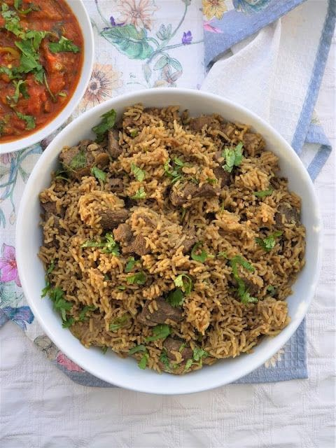

Recipes
Pilau Recipe
Ingredients
- 2 cups basmati rice
- 500g beef or chicken (cubed)
- 2 onions (finely chopped)
- 3 cloves garlic (minced)
- 1-inch ginger (grated)
- 2 tomatoes (chopped)
- 1 tbsp pilau masala
- 1 tsp cumin seeds
- 2 cups broth
- 2 tbsp cooking oil
- Salt to taste

Preparation
- Fry onions in oil until golden brown.
- Add garlic, ginger, cumin seeds, and pilau masala.
- Add meat and cook until browned.
- Mix in tomatoes and cook until soft.
- Pour in broth, season with salt, and bring to a boil.
- Add washed rice, cover, and simmer until cooked.
- Let it rest for 10 minutes before serving.